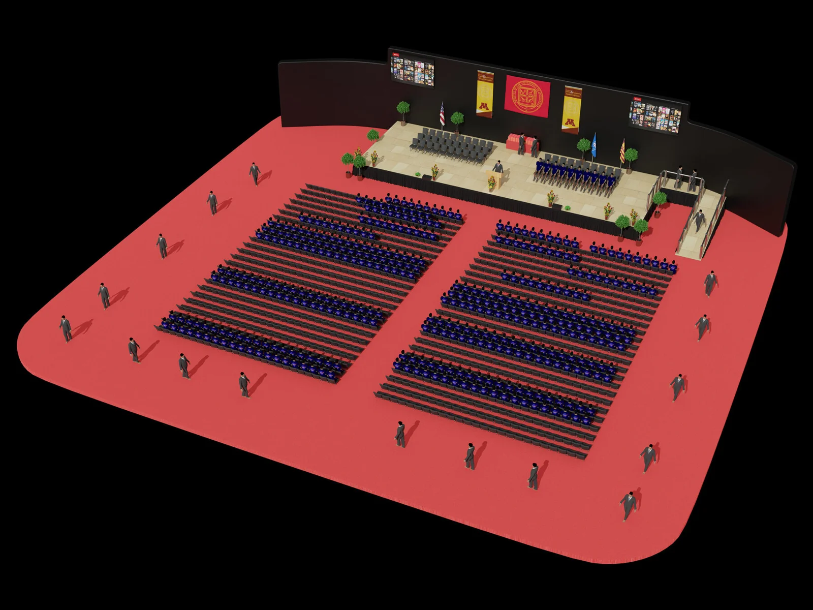
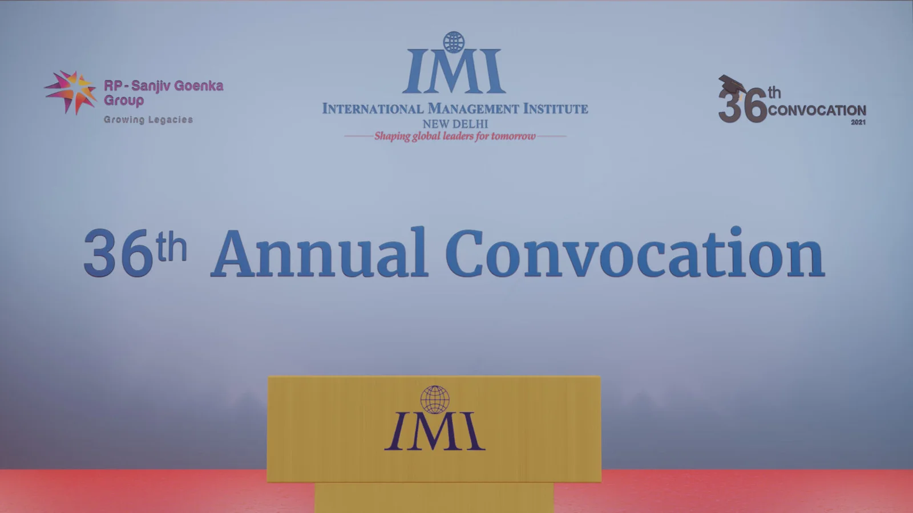
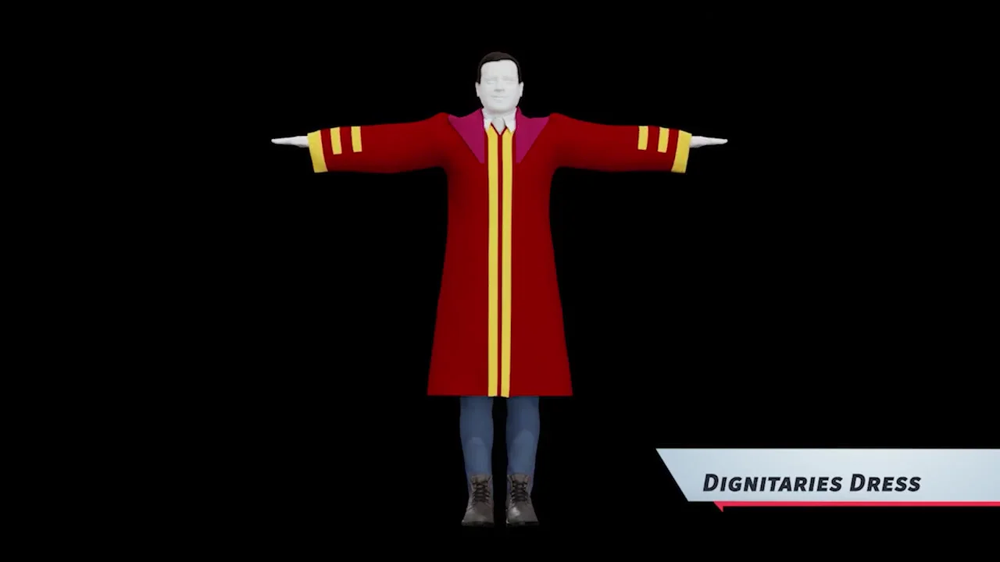

03 / Environment design / Camera automation / Character assembly
A moment,
reimagined.
A virtual ceremony environment bringing spatial design, character animation and an automated camera journey together.
Discuss a similar project ↗
XR convocation · Environment, character assembly and camera automation by Prashant Kumar Tiwari.
01 / THE CHALLENGE
Make it work.
Make it repeatable.
A ceremony needs a coherent space and a clear sequence. The environment, audience and camera journey had to behave as parts of one experience.
MY CONTRIBUTION
- Created an XR convocation setup for 500+ attendees.
- Built a Blender environment with 400+ rigged and animated humanoid characters.
- Created a fully automated camera flythrough.
- Brought environment, staging, characters and rendering into one Blender workflow.
THE OUTCOME
A complete virtual ceremony setup designed for 500+ attendees, combining environment design, 400+ rigged and animated characters, and camera automation.
THE WORKFLOW
Space & ceremony plan → environment → audience & characters → camera path → render
02 / A CLOSER LOOK
The visual story.
Selected project imagery.

